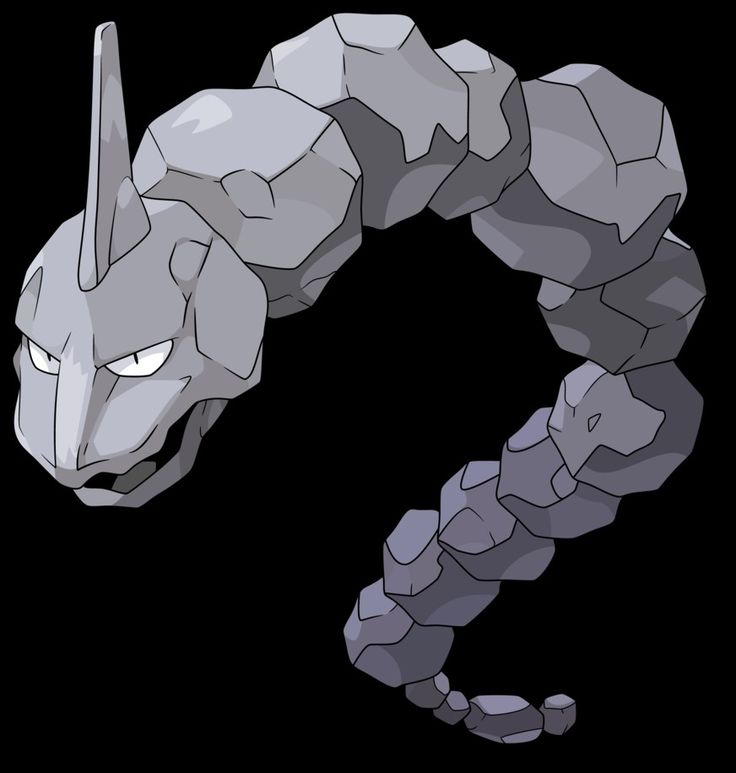
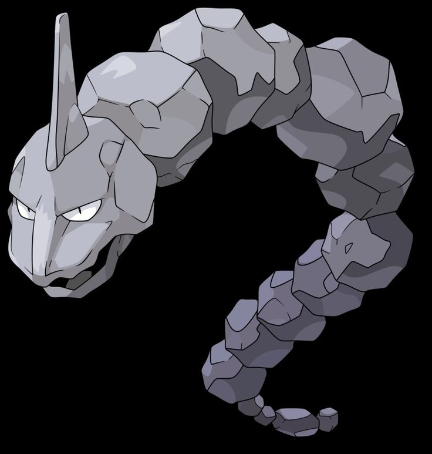
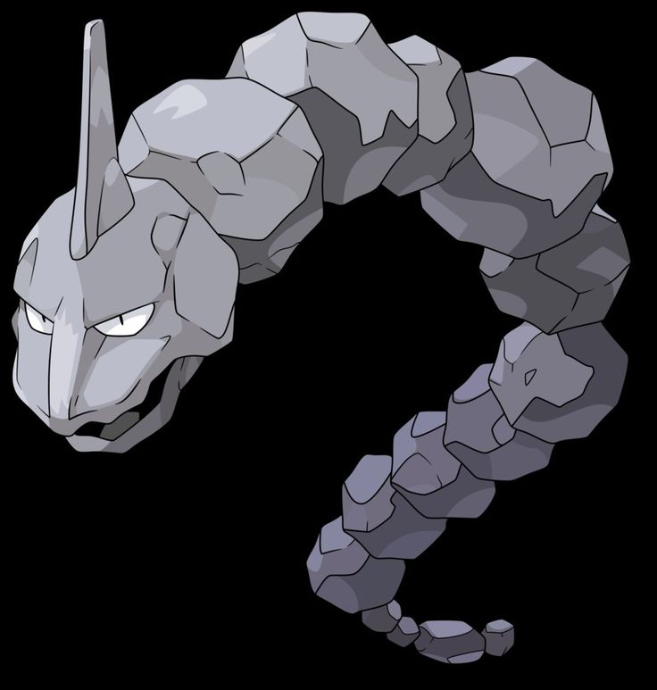

Eevee
Normal TypeA friendly and adaptable Normal-type Pokémon known for its unique ability to evolve into many different forms depending on the conditions.
 

A friendly and adaptable Normal-type Pokémon known for its unique ability to evolve into many different forms depending on the conditions.
